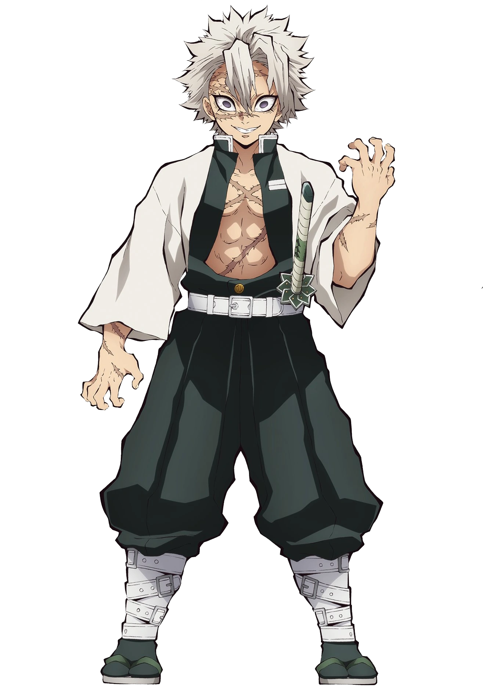

Sanemi Shinazugawa
Kanji
不死川 実弥
Rōmaji
Shinazugawa Sanemi
Characteristics
Race
Human
Gender
Male
Age
21
Affiliation
Affiliation
Demon Slayer Corps
Occupation
Demon Slayer
Wind Hashira
Combat Style
Wind Breathing
Debuts
Anime Debut
Episode 22
Manga Debut
Chapter 45
Portrayal
Japanese VA
Tomokazu Seki
English VA
Kaiji Tang
"Why do you think I went so far as to kill our mother? To protect you. You should have had a house somewhere and raised a family and grow old. To make up for what I couldn't do for mother and our little brothers and little sisters, you should have had a wife and children and made them happy. And I would've never... let a demon get near you."
-Sanemi Shinazugawa to Genya Shinazugawa in True Feelings
Obanai Iguro (不死川 実弥 Shinazugawa Sanemi) is a major supporting character of Demon Slayer: Kimetsu no Yaiba. He is a Demon Slayer of the Demon Slayer Corps and the current Wind Hashira (風柱Kaze Bashira).
Sanemi is also the older brother of Genya Shinazugawa, a Demon Slayer who fought alongside Tanjiro Kamado and Nezuko Kamado. Before becoming a Hashira, Sanemi, along with his partner Masachika Kumeno, defeated the former Lower Rank One, Ubume, with Masachika dying as a result.
Appearance
Sanemi is a tall and muscular man with spiky long white hair and large pale purple eyes. His face and body are covered with scars, accrued over his many years of fighting demons. He cuts his hair short somewhere in between the Rehabilitation Training Arc and the Mugen Train Arc. He is usually seen wearing a crazed expression on his face.
He wears a green-tinted version of the standard Demon Slayer uniform, unbuttoned to expose his chest and abs with a white long sleeved shirt over it with the kanji for kill etched on the back, white buckles around his shins and tabi socks with a pair of white zōri with green straps.
During his battle with Kokushibo, he loses his right index and middle fingers.
Personality

Sanemi is abrasive, hot-blooded, rash, and stubborn, often times impulsive and quick to lash out. He is often indifferent towards others and can get mad extremely easily. The only person Sanemi displayed reverence towards was Kagaya Ubuyashiki, and only after realizing the man was much more than his outward appearance suggested. Sanemi has also displayed a hunger for battle, wishing that he could encounter Upper Rank demons and proclaiming his exciting in fighting Upper Rank One, Kokushibo.
Sanemi's cold, rude, and dismissive behavior is the result of losing too many people he cared about in the past. Later, when he sees those people who have passed, such as his mother, he can't help but give her a smile to be able to see her again. When Genya joins the Demon Slayers in search of him, Sanemi repeatedly dismisses and lashes out during any chance of seeing him, but Tanjiro Kamado is able to tell Sanemi didn't truly hate him; and in fact still bore the same brotherly love he had for him in childhood. This was however never expressed outwardly as he tried to push Genya away from him and the Demon Slayers so he wouldn't be exposed to danger.
Because of all those he lost to demons, he harbors a deep hatred towards demons and is convinced that humans and demons can never coexist. When Sanemi makes up his mind about something, it is extremely difficult to dissuade him. He does not believe Tanjiro's insistence that Nezuko Kamado wouldn't eat humans and moves to prove his own point by stabbing through the box with Nezuko inside. After riling her up, he slashes his own arm to try and bait her into attacking him due to his rare blood's effect. Even after she doesn't, and Kagaya uses this as proof Nezuko won't attack humans, Sanemi doesn't truly accept the Kamado siblings.
Tanjiro is ultimately right about Sanemi. Despite his poor treatment of his brother, Genya, Sanemi truly did love and care for his brother. He even expresses that he wished that Genya would settle down and have a family. Following the battle with Upper Rank One, Sanemi shows not only great anger and a certain emptiness towards Muzan, but more cooperation with the likes of Giyu, someone he clearly did not get along with. Even when Sanemi is launched out of the battle against Muzan, he displays undeniable courage and determination, like his fellow Hashira. When the showdown with Muzan is finally over and time has passed, Sanemi has clearly mellowed out a bit. He is able to smile with Giyu, even after their past confrontations. Most surprisingly, he admits his mistakes and apologizes to Nezuko about his actions. It goes to the point he gives her a smile and a pat on the head, as he sees Genya in the way she responds.
Abilities
Overall Abilities: As a Hashira of the Demon Slayer Corps, Sanemi is a very powerful and skilled combatant. He has displayed his extraordinary abilities and proficiency in combat on multiple occasions. When sparring with Giyu Tomioka, Sanemi was able to fight on equal grounds with the Water Hashira. In the Infinity Castle Arc, Sanemi was shown to be capable of annihilating dozens of demons comparable to Lower Rank demons in strength and later could hold his own against Upper Rank One, Kokushibo. According to Kokushibo, Sanemi's physical abilities and techniques have reached their peak. Kokushibo also commented that Sanemi and Gyomei were highly skilled even among the ranks of the Hashira. After Kokushibo was defeated, Sanemi was quick to recover from the death of his brother and proceeded to assist the Demon Slayers against the Demon King, Muzan Kibutsuji, Sanemi even putting up a good fight himself.
Demon Slayer Mark: Later during the battle against Kokushibo, Sanemi awakened his own Demon Slayer Mark that resembled a single paper origami windmill that is green in color with two dots on both sides on his right cheek. The mark dramatically increases his physical capabilities, as seen when Sanemi was still able to fight and contend with Kokushibo, despite being grievously injured and slashed across his abdomen. However, even though his physical endurance, strength, and tolerance to pain dramatically increased, Sanemi couldn't land a significant hit on Kokushibo without assistance from Gyomei and Muichiro. In addition, Sanemi would have been put into a near-death state twice by Kokushibo if it weren't for their intervention.
Immense Speed & Reflexes: Sanemi possesses tremendous speed and reflexes. He is the second fastest runner among the Hashira. During the Hashira Training Arc, when he was disputing with Tanjiro about Genya, Sanemi moved using a burst of speed so fast it made it seem like he teleported according to some observers. Later, Sanemi displayed a level of speed comparable to, if not surpassing, Giyu. When faced with demons on par with Lower Rank demons, Sanemi was able to effortlessly slice them into pieces while still sitting down.[10] Sanemi was shown to be much faster than Muichiro in the Kokushibo fight as the former was able to keep up with the demon's techniques while the latter was defeated easily despite being marked. Upon awakening his Demon Slayer Mark, Sanemi was able to contend and briefly overpower Kokushibo. Additionally, he was also able to keep up with a weakened Muzan while being supported by other Hashira for a decent period of time.

Intense Stamina & Endurance: Despite sustaining dozens of scars and cuts all over his body, Sanemi never once showed signs of pain or agony, to the point he was willing to cut himself with his katana to test Nezuko Kamado, and didn't even flinch. His incredible stamina and pain endurance also shone through during his battle with Kokushibo, where he could keep up with the Upper Rank demon for an extended period of time by himself without the Demon Slayer Mark and upon receving numerous severe injuries from one of Kokushibo's techniques, still continued to fight which shocked him. In the Sunrise Countdown Arc, he could fight Muzan for roughly half an hour straight without rest, exerting his physical and mental capabilities to its limit without tiring out. When Muzan was cornered, he was one of the first ones to take action, having enough energy to unleash two more Wind Breathing techniques.
Immense Strength: Due to years of harsh training, Sanemi possesses incredible physical strength. He could lift Nezuko Kamado in her box with a single hand without effort, knock out Zenitsu Agatsuma with a casual strike, break a wooden sword because he swung it with too much force, and cut Tanjiro Kamado's ear with a single kick. He was also able to briefly contend with Kokushibo, one of the physically strongest demons in existence in a sword fight.
Marechi: Sanemi's blood was revealed to be one of the rarest blood types, making it incredibly intoxicating and mouth watering to demons. It is also unique due to its intense potency that the smallest whiff of his blood immediately causes demons to salivate and lose focus, as his blood was able to affect the strongest of the Upper Ranks, Kokushibo. However, its effect waned after a while and was proven to completely ineffective against Muzan. Despite his blood's potency, Nezuko was shown to be able to resist it due to her own strong conviction and will not to eat humans, which is even further cemented and strengthened by the hypnosis planted in her brain by Sakonji Urokodaki.
Muscle Control: Sanemi can control his own muscles to an extent, using it to close up and prevent fatal wounds from opening up in the middle of battle, When he was slashed across his abdomen by Kokushibo, Sanemi was still able to fight after taking some time to manipulate his muscles and close up his wounds. This ability surprised Kokushibo and allowed Sanemi to fight for a longer period of time.

Weapon Versatility: Sanemi has shown to be fairly flexible in weapon usage, being able to use Genya's sword and shotgun along with his own Nichirin Sword in a high-speed battle against Kokushibo. Additionally, when fighting Muzan, he utilized fire by dumping oil on the demon and lighting it with a match.
Fighting Style
Master Swordsman: Being a Hashira of the Demon Slayer Corps, Sanemi is one of the most powerful and skilled swordsmen in the entire organization. His swordsmanship proficiency matched that of Giyu Tomioka's, an extremely skilled swordsman in his own right, during their sparring match while undergoing pillar training. Sanemi's skills with the sword allowed him to keep up with and impress Upper Rank One, Kokushibo, a demon with centuries of swordsmanship skill under his belt. Sanemi could also adapt and work with Gyomei's Stone Breathing techniques to push back Kokushibo.
Breathing Style
Wind Breathing (風の呼吸Kaze no kokyū): A Breathing Style that Sanemi learned and mastered with Masachika Kumeno after tutelage from an unknown cultivator. As the Wind Hashira, Sanemi considered to be the most skilled Wind Breathing user of his generation. His level of skill with Wind Breathing reminded Kokushibo of the first Wind Hashira during the Sengoku Era, the Golden Age of Demon Slayers.
Techniques
Equipment
Standard Nichirin Katana: Sanemi carries around a standard sized and shaped Nichirin katana with a jagged pattern resembling the jaw of a beast in a shade of green. His hilt is in an abstract shape with 8 points with an overlapping pattern; each plate has a forest green core with a silver border. As a Hashira, Sanemi's blade has the words Destroyer of Demons (惡鬼滅殺 Akki Messatsu) engraved on the side. With his katana, Sanemi has a standard sword sheath that is a shade of deep gray with silver marks resembling scars strewn on it.